در یک نگاه
این داشبورد وضعیت نیروی انسانی «شرکت نمونه»، یک شرکت صنعتی با حدود نفر را در یک صفحه نشان میدهد: سه گروه نیروی مستقیم شرکت، نیروی کارفرما و نیروی پیمانکار کنار هم، پروژههای جاری واحد منابع انسانی، و شاخصهای «نتایج کارکنان» در مدل تعالی سازمانی.
داشبورد برای پاسخ به این پرسشها طراحی شده است:
- چند نفر در شرکت کار میکنند و سهم هر گروه نیرو چقدر است؟ آیا وابستگی به نیروی پیمانکار در حال افزایش است؟
- کدام واحد بیشترین ترک خدمت را دارد و افراد بیشتر به چه دلیلی میروند؟
- برنامهٔ آموزش، بهویژه آموزش ایمنی، در کدام واحدها عقب است؟ غیبت در کجا و چه ماههایی بالاست؟
- پروژههای منابع انسانی طبق برنامه پیش میروند یا نه؟
- امتیاز ما در معیار «نتایج کارکنان» مدل تعالی چقدر است و ضعیفترین شاخصها کداماند؟
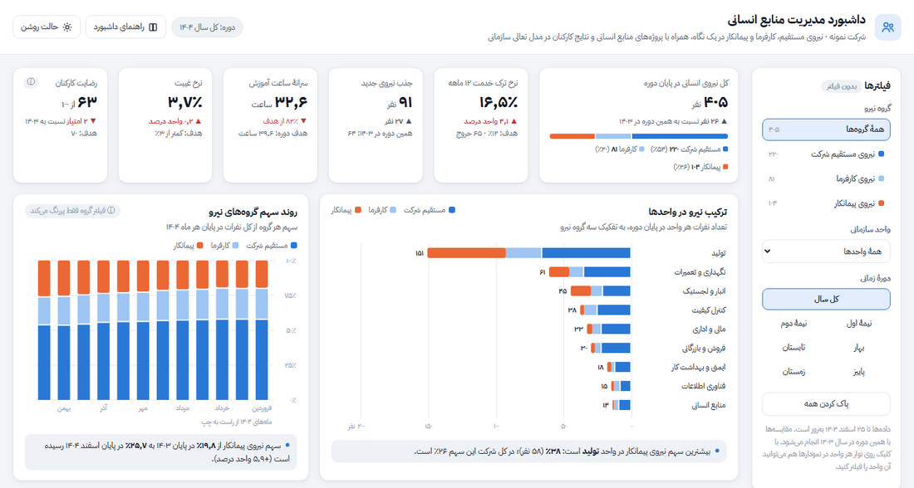
شروع سریع
- اول کارتها را بخوانید. شش کارت بالای صفحه تصویر کلی را میدهند. رنگ سبز یعنی وضعیت بهتر از پارسال یا هدف، و رنگ قرمز یعنی بدتر. مثلاً نرخ ترک خدمت امسال است، در برابر پارسال.
- سراغ «یافتههای کلیدی» بروید. داشبورد مهمترین نکتهها را خودش به زبان ساده نوشته است؛ از همانجا معلوم میشود کدام نمودار را باید دقیقتر ببینید.
- با فیلترها دقیق شوید. از ستون فیلترها گروه نیرو، واحد یا دوره را عوض کنید. روی نوار هر واحد در نمودارها هم که کلیک کنید، همان واحد فیلتر میشود. با «پاک کردن همه» به حالت اول برمیگردید.
فیلترها
ستون فیلترها در دسکتاپ سمت راست صفحه است و روی گوشی بالای صفحه قرار میگیرد (با دکمهٔ «نمایش» باز میشود). سه فیلتر دارید:
- گروه نیرو: همهٔ گروهها، نیروی مستقیم شرکت، نیروی کارفرما یا نیروی پیمانکار. عدد کنار هر گزینه، تعداد نفرات آن گروه در پایان دوره است.
- واحد سازمانی: یکی از نُه واحد شرکت. در نمودارهایی که واحدها را با هم مقایسه میکنند، واحد انتخابشده پررنگ میماند و بقیه کمرنگ میشوند تا مقایسه از دست نرود.
- دورهٔ زمانی: کل سال، نیمهٔ اول یا دوم، یا یکی از چهار فصل ۱۴۰۴. همهٔ مقایسهها با همین دوره در سال ۱۴۰۳ انجام میشود.
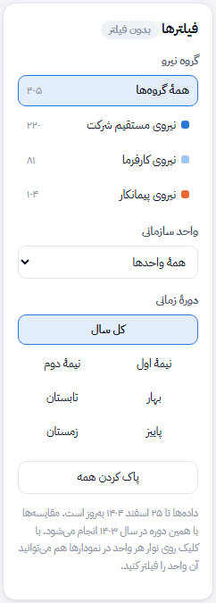
نشانی صفحه هم با فیلترها عوض میشود؛ پس میتوانید نمای فیلترشده را با همکارتان به اشتراک بگذارید. جدول کامل اثر فیلترها را در بخش جدول اثر فیلترها ببینید.
مشاهده در داشبورد ←کارتهای شاخص
شش کارت بالای صفحه مهمترین عددهای دوره را نشان میدهند. زیر هر عدد، مقایسه با همین دوره در ۱۴۰۳ یا با هدف آمده است. فلش ▲ یا ▼ جهت تغییر را نشان میدهد و رنگ، خوب یا بد بودن آن را؛ مثلاً بالا رفتن نرخ غیبت با ▲ قرمز نمایش داده میشود.
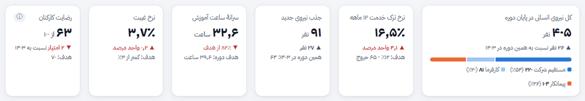
چطور بخوانیم
- کل نیروی انسانی: تعداد نفرات در پایان دوره، بههمراه نوار سهم سه گروه.
- نرخ ترک خدمت: تعداد خروج تقسیم بر میانگین نفرات. برای دورههای کوتاهتر از یک سال، عدد سالانهشده نمایش داده میشود تا با هدف ۱۲٪ قابل مقایسه باشد.
- جذب نیروی جدید: تعداد استخدامهای دوره در برابر پارسال.
- سرانهٔ ساعت آموزش: ساعت آموزش به ازای هر نفر، در برابر هدفی که به نسبت طول دوره محاسبه شده است.
- نرخ غیبت: درصد روزهای کاری که بر اثر غیبت بدون برنامه از دست رفته است.
- رضایت کارکنان: میانگین امتیاز نظرسنجی سالانهٔ آذر (از ۱۰۰).
ترکیب نیرو در واحدها
برای هر واحد یک نوار افقی رسم شده که طول آن تعداد نفرات در پایان دوره است. هر نوار سه تکه دارد: آبی برای نیروی مستقیم، آبی روشن برای نیروی کارفرما و نارنجی برای نیروی پیمانکار. واحدها از بزرگ به کوچک مرتب شدهاند.
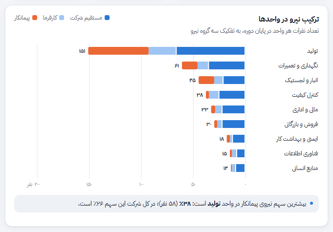
چطور بخوانیم
- عدد انتهای هر نوار، جمع نفرات آن واحد است. با بردن ماوس روی نوار، تعداد و درصد هر گروه را میبینید.
- با کلیک روی نوار یک واحد، کل داشبورد روی همان واحد فیلتر میشود؛ کلیک دوباره فیلتر را برمیدارد.
- اگر فیلتر گروه نیرو را انتخاب کنید، فقط تکهٔ همان گروه رسم میشود.
روند سهم گروههای نیرو
هر ستون یک ماه از ۱۴۰۴ است و کل ارتفاع آن ۱۰۰٪ نفرات همان ماه. ماهها مثل تقویم از راست به چپ چیده شدهاند: فروردین سمت راست و اسفند سمت چپ. عدد روی تکهٔ نارنجی ستون اول و آخر، سهم نیروی پیمانکار است.
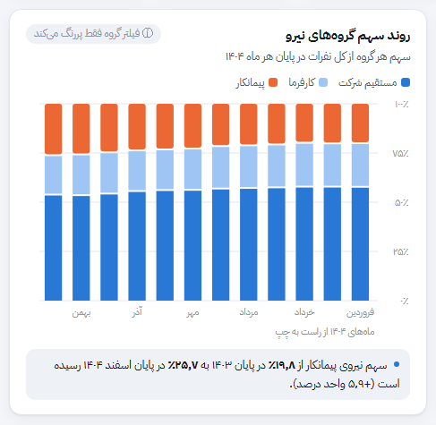
چطور بخوانیم
- اگر تکهٔ نارنجی از راست به چپ بلندتر میشود، یعنی سهم پیمانکار در حال افزایش است.
- این نمودار خودِ سهم گروهها را نشان میدهد، پس فیلتر «گروه نیرو» فقط گروه انتخابشده را پررنگ میکند. ماههای بیرون از دورهٔ انتخابی هم کمرنگ میشوند.
روند تعداد نیرو، جذب و خروج
این نمودار دو بخش دارد. در بخش بالا، خط آبی تعداد نفرات در پایان هر ماه ۱۴۰۴ است و خطچین خاکستری همین عدد در ۱۴۰۳. در بخش پایین، ستون سبز رو به بالا تعداد جذب و ستون قرمز رو به پایین تعداد خروج هر ماه است. دو بخش محور جدا دارند تا عددهای کوچک جذب و خروج زیر عدد بزرگ نفرات گم نشوند.
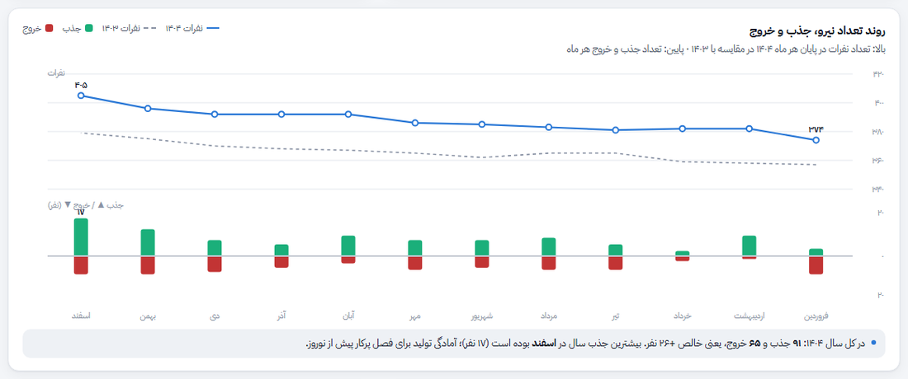
چطور بخوانیم
- وقتی ستون سبز یک ماه از ستون قرمز بلندتر است، نفرات آن ماه زیاد شده است.
- با انتخاب یک فصل یا نیمه در فیلتر دوره، ماههای آن دوره با زمینهٔ آبی کمرنگ مشخص میشوند.
- با بردن ماوس روی هر ماه، همهٔ عددهای آن ماه را یکجا میبینید.
ترک خدمت و دلایل آن
سمت راست این کارت، نرخ ترک خدمت سالانهشدهٔ هر واحد را نشان میدهد. خطچین عمودی هدف ۱۲٪ است و خط کوتاه تیره روی هر نوار، مقدار همان واحد در ۱۴۰۳. رنگ نوار وضعیت را میگوید: قرمز یعنی بیش از ۱٫۵ برابر هدف، نارنجی یعنی بالاتر از هدف و آبی یعنی در حد هدف. سمت چپ، دلیل خروجهای همین دوره از زیاد به کم آمده است.
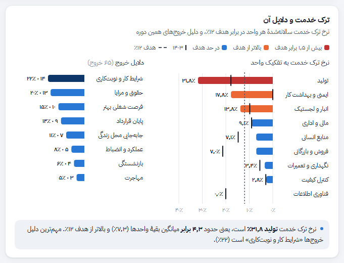
یافتههای کلیدی
این کارت چهار تا پنج نکتهٔ مهم را از دادهٔ فیلترشده بیرون میکشد و به زبان ساده مینویسد. با عوض کردن فیلترها، متن یافتهها هم دوباره محاسبه میشود. رنگ نشانهٔ کنار هر یافته، اهمیت آن را نشان میدهد: قرمز برای مشکل جدی، نارنجی برای هشدار و آبی برای نکتهٔ قابل توجه.
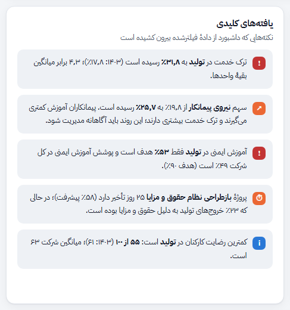
آموزش در برابر هدف
برای هر واحد، نوار رنگی سرانهٔ ساعت آموزش در دوره است و خط کوتاه تیره، هدف همان واحد. عدد کنار نوار، سرانهٔ واقعی و درصد تحقق هدف را نشان میدهد. واحدها از کمترین تحقق به بیشترین مرتب شدهاند تا عقبماندهها بالا دیده شوند. با دکمهٔ بالای کارت میتوانید بین «همهٔ آموزشها» و «فقط آموزش ایمنی» جابهجا شوید.
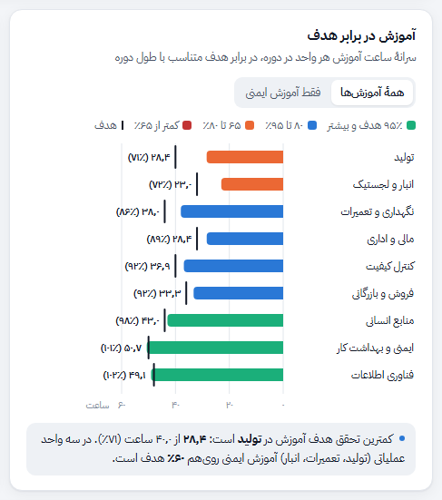
نقشهٔ غیبت
هر خانهٔ این جدول نرخ غیبت یک واحد در یک ماه است؛ یعنی درصد روزهای کاری که بر اثر غیبت بدون برنامه از دست رفته است. هرچه رنگ خانه تیرهتر باشد، غیبت بیشتر است. ستون آخر میانگین دوره و ردیف آخر میانگین کل شرکت در هر ماه است. روی گوشی، جدول را میتوانید به چپ و راست بکشید.
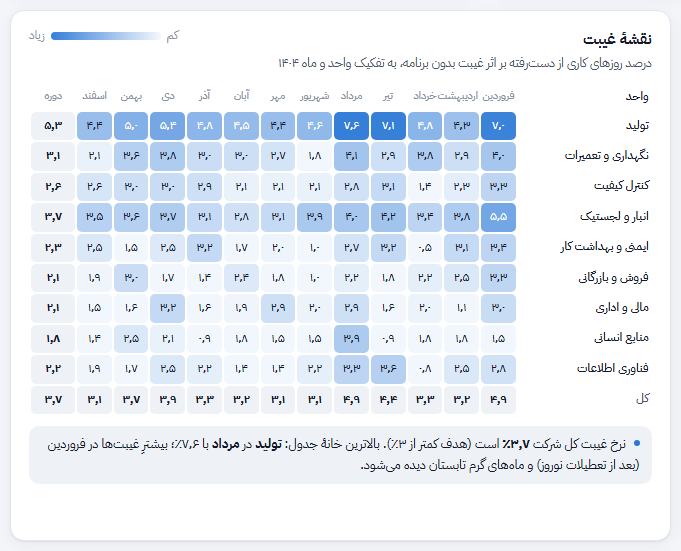
نتایج کارکنان در مدل تعالی سازمانی
در مدل تعالی سازمانی (مانند EFQM)، معیار «نتایج کارکنان» با دو دسته شاخص سنجیده میشود: شاخصهای ادراکی که نظر خود کارکنان را از نظرسنجی میگیرند، و شاخصهای عملکردی که از دادههای سازمان میآیند. این بخش هشت شاخص را کنار هم میگذارد.
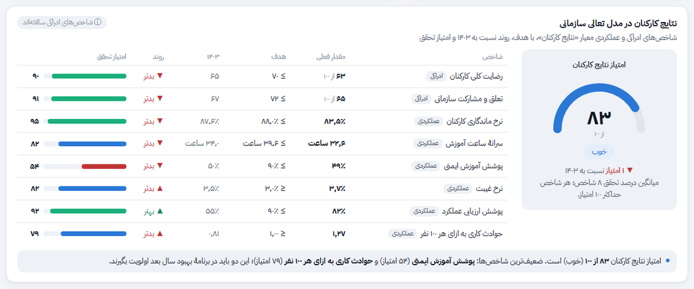
چطور بخوانیم
- برای هر شاخص، مقدار فعلی، هدف، مقدار ۱۴۰۳ و روند (▲ بهتر یا ▼ بدتر) آمده است. برای شاخصهایی مثل غیبت و حوادث، کمتر بودن بهتر است و روند هم با همین منطق رنگ میگیرد.
- امتیاز تحقق هر شاخص، درصد رسیدن به هدف است و حداکثر ۱۰۰ میشود. امتیاز کلی «نتایج کارکنان» میانگین این هشت امتیاز است: ۹۰ و بیشتر «عالی»، ۷۵ تا ۹۰ «خوب»، ۶۰ تا ۷۵ «نیازمند بهبود» و کمتر از ۶۰ «ضعیف».
- شاخصهای ادراکی از نظرسنجی سالانهٔ آذر میآیند و با فیلتر دوره تغییر نمیکنند.
پروژههای جاری منابع انسانی
هر ردیف یک پروژه است با مسئول، تاریخ شروع و پایان، و یک نوار پیشرفت. طول نوار رنگی، پیشرفت واقعی است و خط تیرهٔ عمودی روی نوار، جایی است که طبق برنامه تا تاریخ گزارش (۲۵ اسفند ۱۴۰۴) باید میرسیدیم.
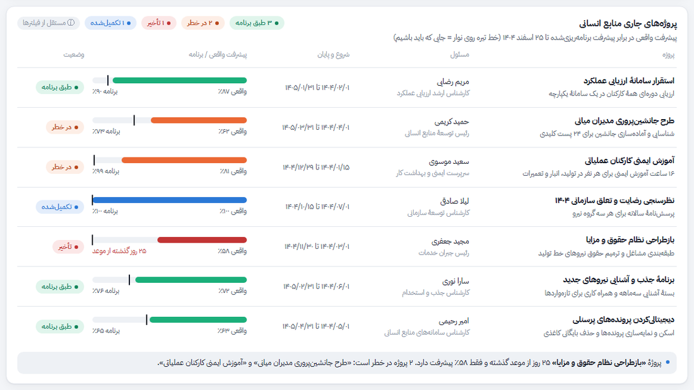
وضعیتها چطور تعیین میشوند
- طبق برنامه: پیشرفت واقعی حداکثر ۸ واحد درصد از برنامه عقب است.
- در خطر: بین ۸ تا ۲۰ واحد درصد عقبتر از برنامه.
- تأخیر: بیش از ۲۰ واحد درصد عقب، یا موعد پایان گذشته و پروژه تمام نشده است.
- تکمیلشده: پیشرفت ۱۰۰٪.
پروژهها در سطح کل شرکت تعریف شدهاند و فیلترها روی این بخش اثر ندارند.
مشاهده در داشبورد ←فهرست کارکنان
این جدول همهٔ افرادی را نشان میدهد که در دورهٔ انتخابی دستکم یک روز در شرکت بودهاند، از جمله کسانی که در همین دوره رفتهاند. ستون «ساعت آموزش در دوره» یک نوار کوچک دارد که میزان رسیدن هر نفر به هدف آموزشیاش را نشان میدهد.
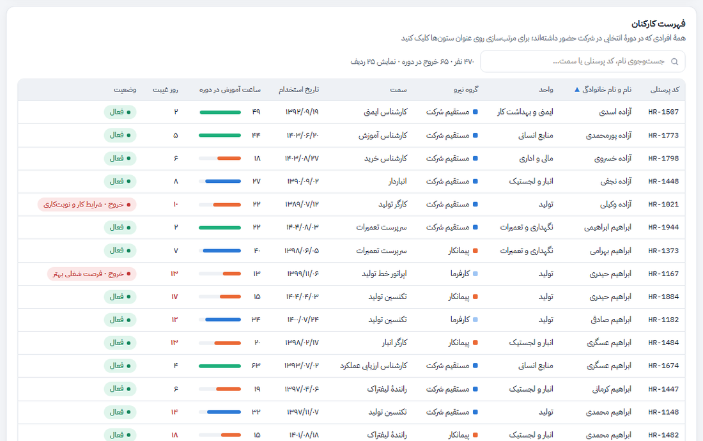
چطور کار کنیم
- مرتبسازی: روی عنوان هر ستون کلیک کنید؛ کلیک دوباره ترتیب را برعکس میکند.
- جستوجو: بخشی از نام، کد پرسنلی، سمت یا نام واحد را بنویسید.
- وضعیت: «فعال»، «تازهوارد» (استخدام در سه ماه آخر دوره) یا «خروج» همراه با دلیل آن.
- روزهای غیبت ۱۰ و بیشتر با رنگ قرمز مشخص میشوند. ۲۵ ردیف اول نمایش داده میشود و با دکمهٔ پایین جدول، ردیفهای بیشتری میآید.
جدول اثر فیلترها
این جدول نشان میدهد هر فیلتر روی کدام بخش اثر دارد. ✓ یعنی عددها دوباره محاسبه میشوند، پررنگسازی یعنی همهٔ موارد میمانند ولی مورد انتخابشده برجسته میشود، و — یعنی فیلتر اثری ندارد.
| بخش | گروه نیرو | واحد سازمانی | دورهٔ زمانی |
|---|---|---|---|
| کارتهای شاخص | ✓ | ✓ | ✓ (بهجز رضایت) |
| ترکیب نیرو در واحدها | ✓ | پررنگسازی | ✓ |
| روند سهم گروهها | پررنگسازی | ✓ | پررنگسازی |
| نیرو، جذب و خروج | ✓ | ✓ | پررنگسازی |
| ترک خدمت و دلایل | ✓ | پررنگسازی | ✓ |
| یافتههای کلیدی | ✓ | ✓ | ✓ |
| آموزش در برابر هدف | ✓ | پررنگسازی | ✓ |
| نقشهٔ غیبت | ✓ | پررنگسازی | پررنگسازی |
| نتایج کارکنان (مدل تعالی) | ✓ | ✓ | ✓ (بهجز شاخصهای سالانه) |
| پروژههای منابع انسانی | — | — | — |
| فهرست کارکنان | ✓ | ✓ | ✓ |
پرسشهای رایج
«نیروی کارفرما» با «نیروی پیمانکار» چه فرقی دارد؟
نیروی کارفرما کسانیاند که قراردادشان با شرکت مادر یا کارفرمای پروژه است ولی در شرکت نمونه کار میکنند. نیروی پیمانکار از طریق شرکتهای پیمانکاری تأمین میشود. داشبورد این سه گروه را جدا نگه میدارد چون هزینه، ماندگاری و نیاز آموزشی آنها متفاوت است.
چرا نرخ ترک خدمت فصلی با عدد کل سال خیلی فرق دارد؟
برای فصلها و نیمهها، نرخ سالانهشده نمایش داده میشود تا با هدف سالانهٔ ۱۲٪ قابل مقایسه باشد. در یک فصل با تعداد کم خروج، این عدد میتواند نوسان زیادی داشته باشد؛ تعداد خروج را هم کنارش ببینید.
چرا رضایت کارکنان با تغییر دوره عوض نمیشود؟
نظرسنجی رضایت و تعلق سازمانی سالی یک بار (آذر) انجام میشود. برای همین، این عدد و دو شاخص ادراکی مدل تعالی فقط با فیلتر گروه نیرو و واحد تغییر میکنند.
امتیاز «نتایج کارکنان» همان امتیاز رسمی ارزیابی تعالی است؟
نه. این امتیاز یک شاخص داخلی برای پایش است: میانگین درصد تحقق هشت شاخص. در ارزیابی رسمی، ارزیابان روند، هدفگذاری و مقایسه با سازمانهای دیگر را هم میسنجند؛ ولی همین شاخصها پایهٔ مستندات آن معیار هستند.
دادهها از کجا میآیند و هر چند وقت بهروز میشوند؟
دادهها از سامانهٔ حضور و غیاب، حقوق و دستمزد، سامانهٔ آموزش و فهرستهای نیروی پیمانکار خوانده میشوند و میتوانند روزانه یا ماهانه بهروز شوند.
میتوانم نمای فیلترشده را برای کسی بفرستم؟
بله. فیلترها در نشانی صفحه ذخیره میشوند؛ نشانی را کپی کنید و بفرستید تا گیرنده همان نما را ببیند.
واژهنامه
- نرخ ترک خدمت
- تعداد افرادی که در دوره از شرکت رفتهاند، تقسیم بر میانگین تعداد نفرات همان دوره. برای دورههای کوتاهتر از یک سال به مقیاس سالانه برده میشود.
- سالانهشده
- عددی که برای یک دورهٔ کوتاه حساب شده و به نسبت ۱۲ ماه بزرگ شده است تا با هدف سالانه مقایسه شود.
- نرخ ماندگاری
- صد منهای نرخ ترک خدمت سالانهشده.
- سرانهٔ ساعت آموزش
- کل ساعت آموزش برگزارشده تقسیم بر میانگین نفرات. هدف هر واحد سالانه تعریف شده و برای دورههای کوتاهتر به همان نسبت کم میشود.
- پوشش آموزش ایمنی
- درصد کارکنان حاضر که در ۱۲ ماه گذشته دستکم سهچهارم ساعت آموزش ایمنی مقرر واحدشان را گذراندهاند.
- نرخ غیبت
- درصد روزهای کاری که بر اثر غیبت بدون برنامه (نه مرخصی برنامهریزیشده) از دست رفته است.
- شاخص ادراکی و عملکردی
- در مدل تعالی، شاخص ادراکی نظر کارکنان را از نظرسنجی میسنجد و شاخص عملکردی از دادههای داخلی سازمان به دست میآید.
- پیشرفت برنامهای
- درصدی از پروژه که اگر کار بهطور یکنواخت بین تاریخ شروع و پایان پیش میرفت، تا تاریخ گزارش باید انجام شده بود.